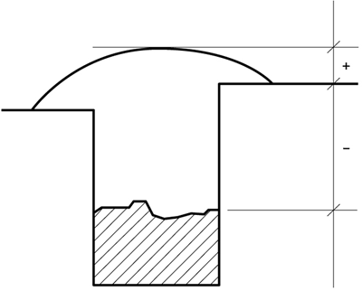
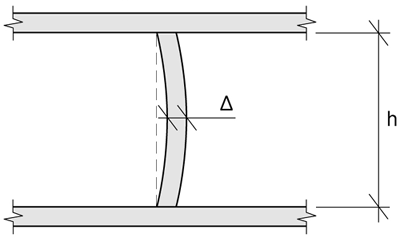
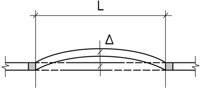

Avser avvikelse från basmåttet till närmaste sekundärlinje (2 st). Kravet avser läge valfritt utmed hela komponentens höjd. Vanligen mäts läget vid komponentens botten och/eller topp.
Avser nivå i förhållande till närbelägen sekundärpunkt i höjd (nivåfixpunkt).
Toleransen kontrolleras i överkant eller underkant beroende på åtkomlighet.
Tolerans avser komponents samtliga sidor. Mäts i ändarna 100 mm in och/eller på mitten. Öppningar och ingjutningsgods relateras till komponents sidor och mäts för stora öppningar på två ställen. I övrigt med två mått längs och tvärs komponenten. Läge kan även vara relaterat till sekundärlinje eller sekundärpunkt i nivå.
Avser avvikelse från en rät linje mellan komponents ändpunkter. Mäts var som helst utmed linjen. Benämns även kantrakhet.

Avser mått mellan ytterhörn på bjälklag eller grundmur. Toleransen gäller samtliga diagonaler.
Kontrollmäts till exempel med mall som träs över skruvgruppen.
Kontrolleras till exempel med mall som har mått och form enligt aktuell pelarfot. Se även nr 6.
Mäts till exempel med hjälp av två mallar. Alternativt beräknas avståndet ur lägekontrollen, se nr 6.
Avvägs medsols med början i skruv med lägsta A- och B-värde och relateras till närmaste sekundärpunkt i höjd (nivåfixpunkt). Alternativt bestäms höjden på skruv med lägsta A- och B-mått och övriga skruvar i gruppen i förhållande till den avvägda.
Ange största tillåtna lodavvikelse och riktning på denna enligt figur. Mäts med vattenpass och avvikelsen med mätsticka vid skruvens överkant.
Avser lokal upphöjning. Mäts med tolk där antal överskridanden per m2 räknas.
Avser lokal fördjupning. Mäts med tolk där antal överskridanden per m2 räknas.
Avser trappstegsformade förskjutningar som till exempel uppkommit mellan olika formflak. Mäts med tolk.
Avser långsträckt upphöjning som kontrollmäts med tolk.
Avvikelse från en rät linje i godtycklig sektion. Två mätsträckor, 2,0 m alternativt 0,25 m. Kan bukta upp eller ned respektive ut eller in. Avvikelsen kan därför vid behov anges med tecken (+/-) där + anger buktning uppåt respektive utåt relaterat till komponents eller byggdels yta.
Avser lutning i mm över en bestämd mätsträcka L, som kan avse en komponents höjd, till exempel vägg eller pelare, eller längden av en godtycklig sektion i tak eller på golv. Lutning relateras till ett horisontalt eller vertikalt plan och kan även benämnas höjdskillnad.
Mäts med linjal (0,25 m), alternativt rätskiva (2,0 m) och mätkil.
Mäts med meterstock/skjutmått. Variationen är skillnaden i fasbredd mellan två godtyckliga mätningar 0,25 m från varandra.
Mäts med hjälp av mall.
Kravet avser valfritt läge på mätpunkter, dock vinkelrätt mot varandra och lämpligast i ände eller mitt på komponent. Kan även beräknas ur lägekontroll.
Läge på mindre ingjutningsgods mäts på mitten inklusive dimensionsmått. Större enheter mäts till exempel i två ytterkanter kompletterat med dimensionsmått.
Avser förskjutning mellan murstenar horisontalt eller vertikalt.
Gäller godtyckligt mätställe. Kontrolleras lämpligen i botten, toppen (100 mm in) samt på mitten när det gäller fogar mellan komponenter som väggelement e d.
Avser nivåskillnad eller avvikelse för läge i sida mellan närliggande komponenter/byggdelar som monteras med eller utan fog.
Avser för golv nivåskillnad vid öppningar med eller utan tröskelmontage.
Fogförskjutning är en avvikelse som avser mötande fogars lägesförskjutning i höjd- och sidled.
Kontrolleras till exempel genom avvägning.
I yta som ska målas eller i beläggning/beklädnad, parkett e d.
Mäts lämpligen med mätkil, linjal eller mätlupp.
Kan beräknas ur lägebestämning i nivå eller mätas separat.
Avser avvikelse från specificerad upplagslängd.
Mäts till exempel med linjal eller mätstock.



Förankringsskruvar och liknande ingjutningsgods.
Toleransen avser avvikelser från nominellt mått mellan närliggande komponenter.
Krökningen hos en balk. L= fritt mått mellan upplag.

Lutning hos en balk eller platta.
Nivåskillnad mellan närliggande balkar mätt vid motsvarande punkter.
Avser det fjärde hörnets avvikelse från ett plan genom de tre övriga. Mäts 100 mm in från hörnen eller i eventuella upplagsklackar.